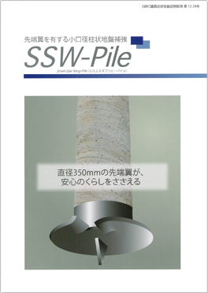
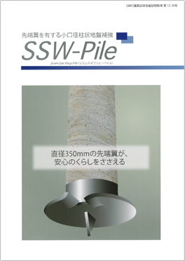

［2013/8］
SSW-Pile.pdf

PDFを閲覧するにはAcrobat Reader、又はAdobe Readerが必要です。
Adobe ReaderはAdobe社WEBサイトからダウンロードできます。
Adobe Readerのダウンロード



PDFを閲覧するにはAcrobat Reader、又はAdobe Readerが必要です。
Adobe ReaderはAdobe社WEBサイトからダウンロードできます。
Adobe Readerのダウンロード